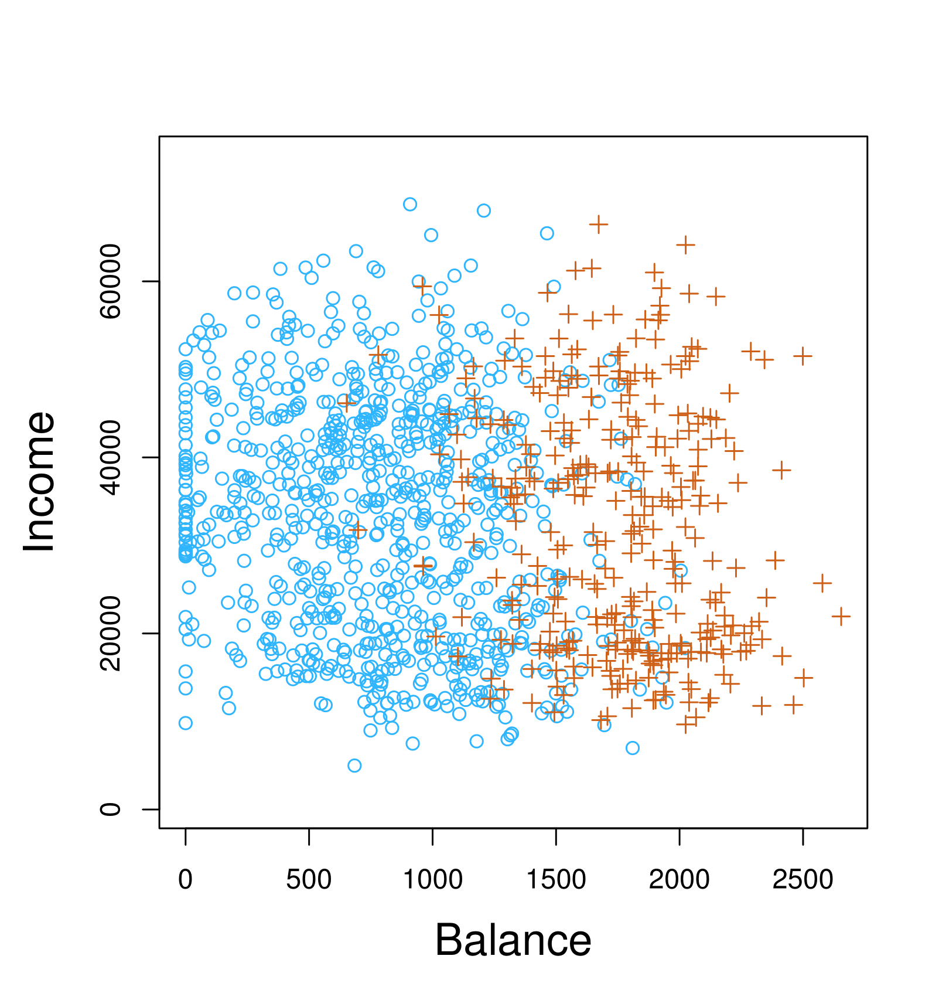
MGMT 47400: Predictive Analytics
Classification
Professor: Davi Moreira
Overview
- XXXX
- XXX
XXX
XXXX
Classification
- Qualitative variables take values in an unordered set \(C\), such as:
- \(\text{eye color} \in \{\text{brown}, \text{blue}, \text{green}\}\)
- \(\text{email} \in \{\text{spam}, \text{ham}\}\)
- Given a feature vector \(X\) and a qualitative response \(Y\) taking values in the set \(C\), the classification task is to build a function \(C(X)\) that takes as input the feature vector \(X\) and predicts its value for \(Y\); i.e. \(C(X) \in C\).
- Often, we are more interested in estimating the probabilities that \(X\) belongs to each category in \(C\).
For example, it is more valuable to have an estimate of the probability that an insurance claim is fraudulent, than a classification as fraudulent or not.
Example: Credit Card Default
- Scatter plot of income vs. balance with markers indicating whether a person defaulted (e.g., “+” for defaulted, “o” for not defaulted).
- Boxplots comparing balance and income for default (“Yes”) vs. no default (“No”).

Can we use Linear Regression?
Suppose for the Default classification task that we code:
\[ Y = \begin{cases} 0 & \text{if No} \\ 1 & \text{if Yes.} \end{cases} \]
Can we simply perform a linear regression of \(Y\) on \(X\) and classify as Yes if \(\hat{Y} > 0.5\)?
- In this case of a binary outcome, linear regression does a good job as a classifier and is equivalent to linear discriminant analysis, which we discuss later.
- Since in the population \(E(Y|X = x) = \Pr(Y = 1|X = x)\), we might think that regression is perfect for this task.
- However, linear regression might produce probabilities less than zero or greater than one. Logistic regression is more appropriate.
Linear versus Logistic Regression
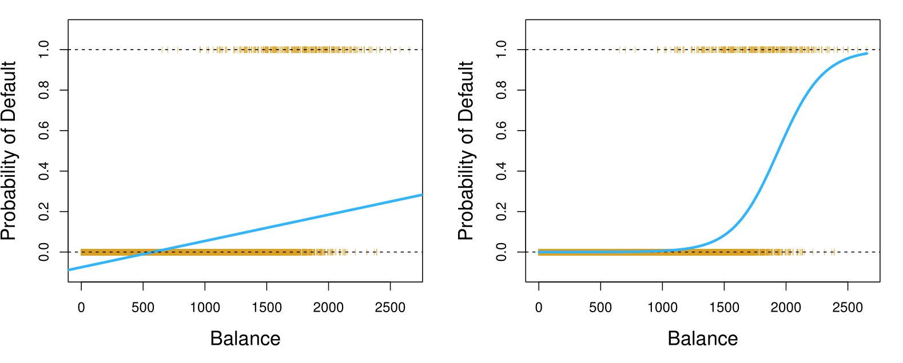- Left plot: Probability of Default using Linear Regression:
- Orange marks indicate the response \(Y\), either 0 or 1.
- Linear regression does not estimate \(\Pr(Y = 1|X)\) well.
- Right plot: Probability of Default using Logistic Regression:
- Logistic regression seems well-suited to the task.
The orange marks indicate the response \(Y\), either 0 or 1. Linear regression does not estimate \(\Pr(Y = 1|X)\) well. Logistic regression seems well-suited to the task.
Linear Regression continued
Now suppose we have a response variable with three possible values. A patient presents at the emergency room, and we must classify them according to their symptoms.
\[ Y = \begin{cases} 1 & \text{if stroke;} \\ 2 & \text{if drug overdose;} \\ 3 & \text{if epileptic seizure.} \end{cases} \]
This coding suggests an ordering, and in fact implies that the difference between stroke and drug overdose is the same as between drug overdose and epileptic seizure.
Linear regression is not appropriate here. Multiclass Logistic Regression or Discriminant Analysis are more appropriate.
Logistic Regression
Let’s write \(p(X) = \Pr(Y = 1|X)\) for short and consider using balance to predict default. Logistic regression uses the form:
\[ p(X) = \frac{e^{\beta_0 + \beta_1 X}}{1 + e^{\beta_0 + \beta_1 X}}. \]
\((e \approx 2.71828)\) is a mathematical constant [Euler’s number].
It is easy to see that no matter what values \(\beta_0\), \(\beta_1\), or \(X\) take, \(p(X)\) will have values between 0 and 1.
A bit of rearrangement gives:
\[ \log\left(\frac{p(X)}{1 - p(X)}\right) = \beta_0 + \beta_1 X. \]
This monotone transformation is called the log odds or logit transformation of \(p(X)\). (By log, we mean natural log: \(\ln\).)
Linear versus Logistic Regression
Logistic regression ensures that our estimate for \(p(X)\) lies between 0 and 1.
Maximum Likelihood
We use maximum likelihood to estimate the parameters.
\[ \ell(\beta_0, \beta) = \prod_{i:y_i=1} p(x_i) \prod_{i:y_i=0} (1 - p(x_i)). \]
This likelihood gives the probability of the observed zeros and ones in the data. We pick \(\beta_0\) and \(\beta_1\) to maximize the likelihood of the observed data.
Most statistical packages can fit linear logistic regression models by maximum likelihood. In R, we use the glm function.
Logistic Regression Coefficients
Coefficient | Std. Error | Z-statistic | P-value |
|-||-|-| | Intercept | -10.6513 | 0.3612 | -29.5 | < 0.0001 | | balance | 0.0055 | 0.0002 | 24.9 | < 0.0001 |
Making Predictions
What is our estimated probability of default for someone with a balance of $1000?
\[ \hat{p}(X) = \frac{e^{\hat{\beta}_0 + \hat{\beta}_1 X}}{1 + e^{\hat{\beta}_0 + \hat{\beta}_1 X}} = \frac{e^{-10.6513 + 0.0055 \times 1000}}{1 + e^{-10.6513 + 0.0055 \times 1000}} = 0.006 \]
With a balance of $2000?
\[ \hat{p}(X) = \frac{e^{\hat{\beta}_0 + \hat{\beta}_1 X}}{1 + e^{\hat{\beta}_0 + \hat{\beta}_1 X}} = \frac{e^{-10.6513 + 0.0055 \times 2000}}{1 + e^{-10.6513 + 0.0055 \times 2000}} = 0.586 \]
Logistic Regression with Student Predictor
Let’s do it again, using student as the predictor.
Logistic Regression Coefficients
| Coefficient | Std. Error | Z-statistic | P-value | |
|---|---|---|---|---|
| Intercept | -3.5041 | 0.0707 | -49.55 | < 0.0001 |
| student[Yes] | 0.4049 | 0.1150 | 3.52 | 0.0004 |
Predicted Probabilities
\[ \hat{\Pr}(\text{default} = \text{Yes} \mid \text{student} = \text{Yes}) = \frac{e^{-3.5041 + 0.4049 \times 1}}{1 + e^{-3.5041 + 0.4049 \times 1}} = 0.0431, \]
\[ \hat{\Pr}(\text{default} = \text{Yes} \mid \text{student} = \text{No}) = \frac{e^{-3.5041 + 0.4049 \times 0}}{1 + e^{-3.5041 + 0.4049 \times 0}} = 0.0292. \]
Logistic Regression with Several Variables
\[ \log\left(\frac{p(X)}{1 - p(X)}\right) = \beta_0 + \beta_1 X_1 + \cdots + \beta_p X_p \]
\[ p(X) = \frac{e^{\beta_0 + \beta_1 X_1 + \cdots + \beta_p X_p}}{1 + e^{\beta_0 + \beta_1 X_1 + \cdots + \beta_p X_p}} \]
Logistic Regression Coefficients
| Coefficient | Std. Error | Z-statistic | P-value |
|——————-|————-|————|———– -|———-| | Intercept | -10.8690 | 0.4923 | -22.08 | < 0.0001 | | balance | 0.0057 | 0.0002 | 24.74 | < 0.0001 | | income | 0.0030 | 0.0082 | 0.37 | 0.7115 | | student[Yes] | -0.6468 | 0.2362 | -2.74 | 0.0062 |
Why is the coefficient for student negative, while it was positive before?
Confounding
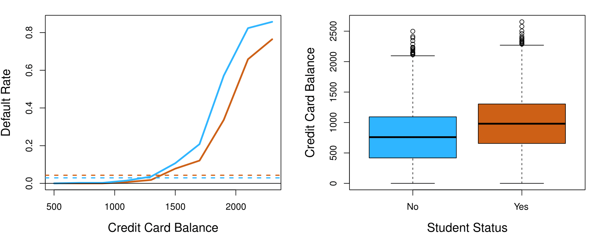- Students tend to have higher balances than non-students, so their marginal default rate is higher than for non-students.
- But for each level of balance, students default less than non-students.
- Multiple logistic regression can tease this out.
Example: South African Heart Disease
- 160 cases of MI (myocardial infarction) and 302 controls (all male in age range 15–64), from Western Cape, South Africa, in the early 80s.
- Overall prevalence very high in this region: 5.1%.
- Measurements on seven predictors (risk factors), shown in a scatterplot matrix.
- Goal is to identify relative strengths and directions of risk factors.
- This was part of an intervention study aimed at educating the public on healthier diets.
Scatterplot Matrix of South African Heart Disease Data
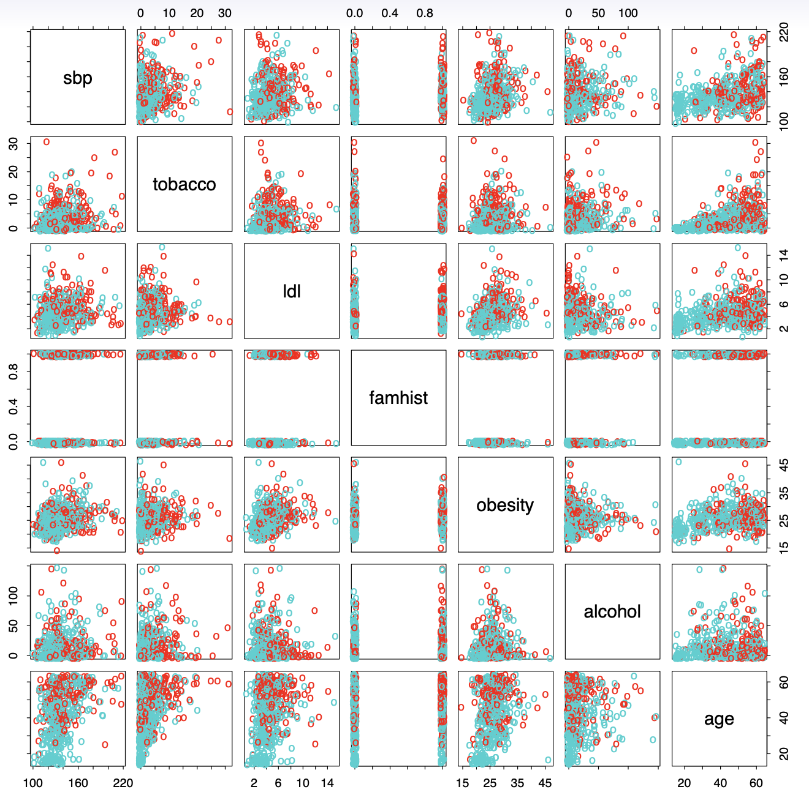
- Scatterplot matrix of the South African Heart Disease data.
- The response is color-coded:
- The cases (MI) are red.
- The controls are turquoise.
- famhist is a binary variable, with 1 indicating family history of MI.
Case-control Sampling and Logistic Regression
- In South African data, there are 160 cases, 302 controls — \(\tilde{\pi} = 0.35\) are cases. Yet the prevalence of MI in this region is \(\pi = 0.05\).
- With case-control samples, we can estimate the regression parameters \(\beta_j\) accurately (if our model is correct); the constant term \(\beta_0\) is incorrect.
- We can correct the estimated intercept by a simple transformation:
\[ \hat{\beta}_0^* = \hat{\beta}_0 + \log\left(\frac{\pi}{1-\pi}\right) - \log\left(\frac{\tilde{\pi}}{1-\tilde{\pi}}\right) \]
- Often cases are rare, and we take them all; up to five times that number of controls is sufficient. See the next frame.
Diminishing Returns in Unbalanced Binary Data
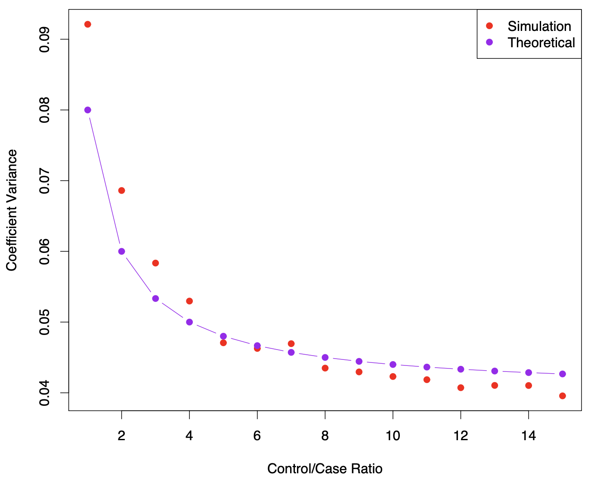
- Sampling more controls than cases reduces the variance of the parameter estimates.
- However, after a ratio of about 5 to 1, the variance reduction flattens out.
Logistic Regression with More than Two Classes
So far, we have discussed logistic regression with two classes. It is easily generalized to more than two classes. One version (used in the R package glmnet) has the symmetric form:
\[ \Pr(Y = k \mid X) = \frac{e^{\beta_{0k} + \beta_{1k}X_1 + \cdots + \beta_{pk}X_p}}{\sum_{\ell=1}^{K} e^{\beta_{0\ell} + \beta_{1\ell}X_1 + \cdots + \beta_{p\ell}X_p}} \]
Here there is a linear function for each class.
(The mathier students will recognize that some cancellation is possible, and only \(K - 1\) linear functions are needed as in 2-class logistic regression.)
Multiclass logistic regression is also referred to as multinomial regression.
Discriminant Analysis
Here the approach is to model the distribution of \(X\) in each of the classes separately, and then use Bayes theorem to flip things around and obtain \(\Pr(Y \mid X)\).
When we use normal (Gaussian) distributions for each class, this leads to linear or quadratic discriminant analysis.
However, this approach is quite general, and other distributions can be used as well. We will focus on normal distributions.
Bayes Theorem for Classification
Thomas Bayes was a famous mathematician whose name represents a big subfield of statistical and probabilistic modeling. Here we focus on a simple result, known as Bayes theorem:
\[ \Pr(Y = k \mid X = x) = \frac{\Pr(X = x \mid Y = k) \cdot \Pr(Y = k)}{\Pr(X = x)} \]
One writes this slightly differently for discriminant analysis:
\[ \Pr(Y = k \mid X = x) = \frac{\pi_k f_k(x)}{\sum_{\ell=1}^K \pi_\ell f_\ell(x)}, \quad \text{where} \]
- \(f_k(x) = \Pr(X = x \mid Y = k)\) is the density for \(X\) in class \(k\). Here we will use normal densities for these, separately in each class.
- \(\pi_k = \Pr(Y = k)\) is the marginal or prior probability for class \(k\).
Classify to the Highest Density

\[ \pi_1 = 0.5, \quad \pi_2 = 0.5 \]
\[ \pi_1 = 0.3, \quad \pi_2 = 0.7 \]
- We classify a new point according to which density is highest.
- When the priors are different, we take them into account as well, and compare \(\pi_k f_k(x)\).
- On the right, we favor the pink class — the decision boundary has shifted to the left.
Why Discriminant Analysis?
When the classes are well-separated, the parameter estimates for the logistic regression model are surprisingly unstable. Linear discriminant analysis does not suffer from this problem.
If \(n\) is small and the distribution of the predictors \(X\) is approximately normal in each of the classes, the linear discriminant model is again more stable than the logistic regression model.
Linear discriminant analysis is popular when we have more than two response classes, because it also provides low-dimensional views of the data.
Linear Discriminant Analysis when \(p = 1\)
The Gaussian density has the form:
\[ f_k(x) = \frac{1}{\sqrt{2\pi\sigma_k}} e^{-\frac{1}{2} \left( \frac{x - \mu_k}{\sigma_k} \right)^2} \]
Here \(\mu_k\) is the mean, and \(\sigma_k^2\) the variance (in class \(k\)). We will assume that all the \(\sigma_k = \sigma\) are the same.
Plugging this into Bayes formula, we get a rather complex expression for \(p_k(x) = \Pr(Y = k \mid X = x)\):
\[ p_k(x) = \frac{\pi_k \frac{1}{\sqrt{2\pi\sigma}} e^{-\frac{1}{2} \left( \frac{x - \mu_k}{\sigma} \right)^2}}{\sum_{\ell=1}^K \pi_\ell \frac{1}{\sqrt{2\pi\sigma}} e^{-\frac{1}{2} \left( \frac{x - \mu_\ell}{\sigma} \right)^2}} \]
Happily, there are simplifications and cancellations.
Discriminant Functions
To classify at the value \(X = x\), we need to see which of the \(p_k(x)\) is largest. Taking logs, and discarding terms that do not depend on \(k\), we see that this is equivalent to assigning \(x\) to the class with the largest discriminant score:
\[ \delta_k(x) = x \cdot \frac{\mu_k}{\sigma^2} - \frac{\mu_k^2}{2\sigma^2} + \log(\pi_k) \]
- Note that \(\delta_k(x)\) is a linear function of \(x\).
- If there are \(K = 2\) classes and \(\pi_1 = \pi_2 = 0.5\), then one can see that the decision boundary is at:
\[ x = \frac{\mu_1 + \mu_2}{2}. \]
(See if you can show this.)
Example: Estimating Parameters for Discriminant Analysis

- Example with \(\mu_1 = -1.5\), \(\mu_2 = 1.5\), \(\pi_1 = \pi_2 = 0.5\), and \(\sigma^2 = 1\).
- Typically, we don’t know these parameters; we just have the training data. In that case, we simply estimate the parameters and plug them into the rule.
Estimating the Parameters
\[ \hat{\pi}_k = \frac{n_k}{n} \]
\[ \hat{\mu}_k = \frac{1}{n_k} \sum_{i: y_i = k} x_i \]
\[ \hat{\sigma}^2 = \frac{1}{n - K} \sum_{k=1}^K \sum_{i: y_i = k} (x_i - \hat{\mu}_k)^2 \]
\[ = \sum_{k=1}^K \frac{n_k - 1}{n - K} \cdot \hat{\sigma}_k^2 \]
where
\[ \hat{\sigma}_k^2 = \frac{1}{n_k - 1} \sum_{i: y_i = k} (x_i - \hat{\mu}_k)^2 \]
is the usual formula for the estimated variance in the \(k\)-th class.
Linear Discriminant Analysis when \(p > 1\)

Density:
\[ f(x) = \frac{1}{(2\pi)^{p/2} |\Sigma|^{1/2}} e^{-\frac{1}{2}(x - \mu)^T \Sigma^{-1} (x - \mu)} \]
Discriminant function:
\[ \delta_k(x) = x^T \Sigma^{-1} \mu_k - \frac{1}{2} \mu_k^T \Sigma^{-1} \mu_k + \log \pi_k \]
Despite its complex form:
\[ \delta_k(x) = c_{k0} + c_{k1}x_1 + c_{k2}x_2 + \cdots + c_{kp}x_p \]
is a linear function.
Illustration: \(p = 2\) and \(K = 3\) classes
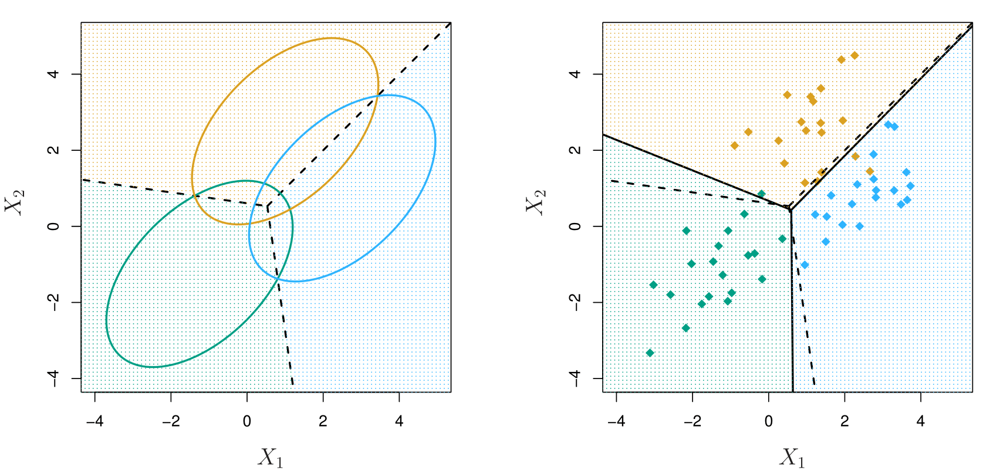Here \(\pi_1 = \pi_2 = \pi_3 = \frac{1}{3}\).
The dashed lines are known as the Bayes decision boundaries. Were they known, they would yield the fewest misclassification errors, among all possible classifiers.
Fisher’s Iris Data

- 4 variables
- 3 species
- 50 samples/class
- 🟦 Setosa
- 🟧 Versicolor
- 🟩 Virginica
LDA classifies all but 3 of the 150 training samples correctly.
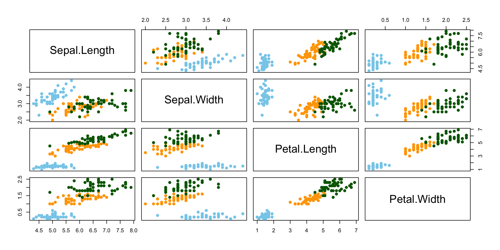
Fisher’s Discriminant Plot
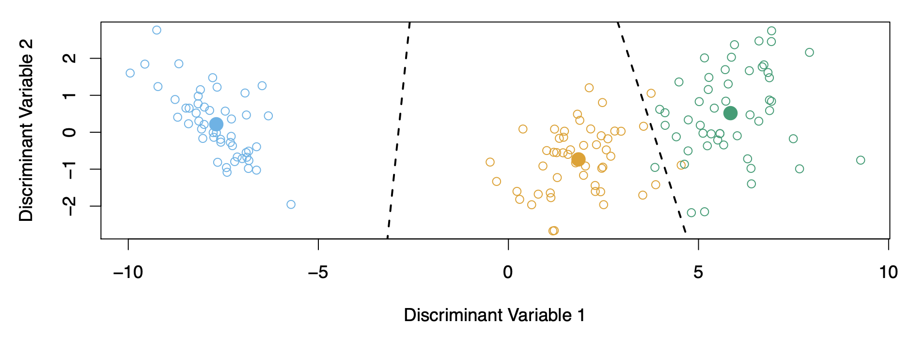- When there are \(K\) classes, linear discriminant analysis (LDA) can be visualized exactly in a \(K - 1\)-dimensional plot.
- LDA classifies points based on their proximity to centroids in the discriminant space.
- For \(K > 3\), the best two-dimensional plane for visualization can be identified to illustrate the discriminant rule effectively.
From \(\delta_k(x)\) to Probabilities
- Once we have estimates \(\hat{\delta}_k(x)\), we can turn these into estimates for class probabilities:
\[ \hat{\Pr}(Y = k | X = x) = \frac{e^{\hat{\delta}_k(x)}}{\sum_{l=1}^K e^{\hat{\delta}_l(x)}}. \]
So classifying to the largest \(\hat{\delta}_k(x)\) amounts to classifying to the class for which \(\hat{\Pr}(Y = k | X = x)\) is largest.
When \(K = 2\), we classify to class 2 if \(\hat{\Pr}(Y = 2 | X = x) \geq 0.5\), else to class 1.
LDA on Credit Data
| Predicted Default Status | No | Yes | Total |
|---|---|---|---|
| True Default Status | |||
| No | 9644 | 252 | 9896 |
| Yes | 23 | 81 | 104 |
| Total | 9667 | 333 | 10000 |
- \((23 + 252) / 10000\) errors — a 2.75% misclassification rate!
Some caveats:
This is training error, and we may be overfitting. Not a big concern here since \(n = 10000\) and \(p = 2\)!
If we classified to the prior — always to class No in this case — we would make \(333 / 10000\) errors, or only 3.33%.
Of the true No’s, we make \(23 / 9667 = 0.2\%\) errors; of the true Yes’s, we make \(252 / 333 = 75.7\%\) errors!
Types of errors
False positive rate: The fraction of negative examples that are classified as positive — 0.2% in example.
False negative rate: The fraction of positive examples that are classified as negative — 75.7% in example.
We produced this table by classifying to class Yes if:
\[ \hat{P}(\text{Default} = \text{Yes} \mid \text{Balance}, \text{Student}) \geq 0.5 \]
We can change the two error rates by changing the threshold from \(0.5\) to some other value in \([0, 1]\):
\[ \hat{P}(\text{Default} = \text{Yes} \mid \text{Balance}, \text{Student}) \geq \text{threshold}, \]
and vary \(\text{threshold}\).
Varying the threshold
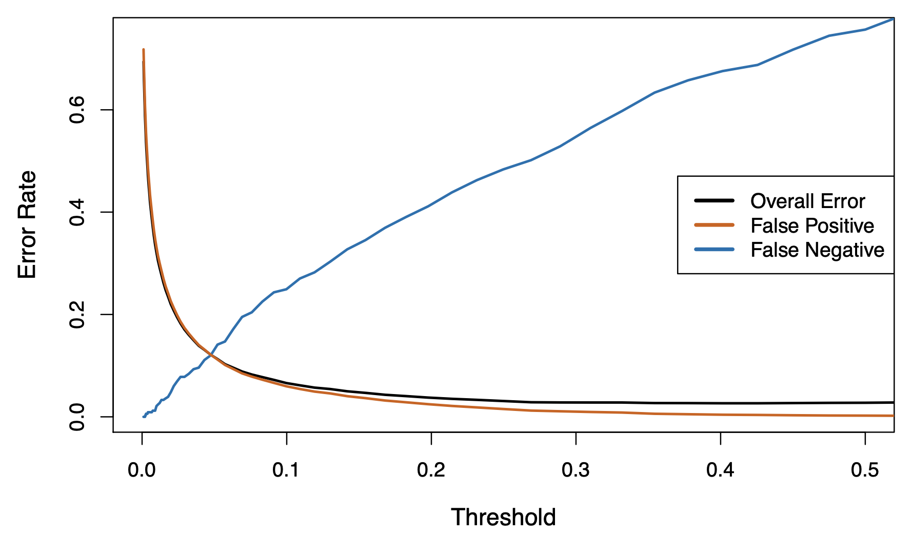In order to reduce the false negative rate, we may want to reduce the threshold to 0.1 or less.
ROC Curve

The ROC plot displays both simultaneously.
Sometimes we use the AUC or area under the curve to summarize the overall performance. Higher AUC is good.
Other Forms of Discriminant Analysis
\[ \Pr(Y = k|X = x) = \frac{\pi_k f_k(x)}{\sum_{l=1}^{K} \pi_l f_l(x)} \]
- When \(f_k(x)\) are Gaussian densities, with the same covariance matrix \(\Sigma\) in each class, this leads to linear discriminant analysis.
- By altering the forms for \(f_k(x)\), we get different classifiers:
- With Gaussians but different \(\Sigma_k\) in each class, we get quadratic discriminant analysis.
- With \(f_k(x) = \prod_{j=1}^{p} f_{jk}(x_j)\) (conditional independence model) in each class, we get naive Bayes. For Gaussians, this means \(\Sigma_k\) are diagonal.
- Many other forms, by proposing specific density models for \(f_k(x)\), including nonparametric approaches.
Quadratic Discriminant Analysis
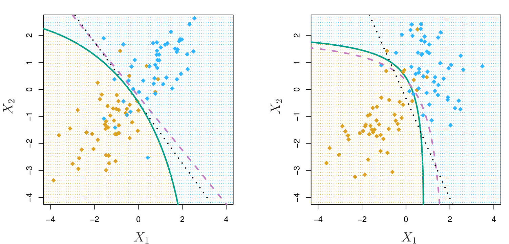\[ \delta_k(x) = -\frac{1}{2}(x - \mu_k)^T \Sigma_k^{-1}(x - \mu_k) + \log \pi_k - \frac{1}{2} \log |\Sigma_k| \]
- Key Insight: Because the (_k) are different for each class, the quadratic terms matter significantly.
Interpretation
- QDA allows for non-linear decision boundaries due to unique covariance matrices for each class.
- It is more flexible than LDA but requires more data to estimate class-specific (_k) accurately.
Naive Bayes
- Assumes features are independent in each class.
- Useful when \(p\) is large, and so multivariate methods like QDA and even LDA break down.
Gaussian Naive Bayes Assumptions
\[ \delta_k(x) \propto \log \left[ \pi_k \prod_{j=1}^p f_{kj}(x_j) \right] \] \[ = -\frac{1}{2} \sum_{j=1}^p \left[ \frac{(x_j - \mu_{kj})^2}{\sigma_{kj}^2} + \log \sigma_{kj}^2 \right] + \log \pi_k \]
- Can be used for mixed feature vectors (qualitative and quantitative):
- If \(X_j\) is qualitative, replace \(f_{kj}(x_j)\) with the probability mass function (histogram) over discrete categories.
**Key Point Despite strong assumptions, naive Bayes often produces good classification results.
Logistic Regression versus LDA
For a two-class problem, one can show that for LDA: \[ \log \left( \frac{p_1(x)}{1 - p_1(x)} \right) = \log \left( \frac{p_1(x)}{p_2(x)} \right) = c_0 + c_1 x_1 + \dots + c_p x_p \]
- So it has the same form as logistic regression.
- The difference lies in how the parameters are estimated.
Key Differences:
- Logistic regression uses the conditional likelihood based on \(\text{Pr}(Y|X)\) (known as discriminative learning).
- LDA uses the full likelihood based on \(\text{Pr}(X, Y)\) (known as generative learning).
- Despite these differences, in practice, the results are often very similar.
Footnote: Logistic regression can also fit quadratic boundaries like QDA by explicitly including quadratic terms in the model.
Summary
- Logistic regression is very popular for classification, especially when \(K = 2\).
- LDA is useful when \(n\) is small, or the classes are well separated, and Gaussian assumptions are reasonable. Also useful when \(K > 2\).
- Naive Bayes is useful when \(p\) is very large.
- See Section 4.5 for some comparisons of logistic regression, LDA, and KNN.
Multinomial Logistic Regression
Logistic regression is frequently used when the response is binary, or \(K = 2\) classes. We need a modification when there are \(K > 2\) classes. E.g. stroke, drug overdose, and epileptic seizure for the emergency room example.
The simplest representation uses different linear functions for each class, combined with the softmax function to form probabilities:
\[ \Pr(Y = k | X = x) = \frac{e^{\beta_{k0} + \beta_{k1}x_1 + \cdots + \beta_{kp}x_p}}{\sum_{l=1}^{K} e^{\beta_{l0} + \beta_{l1}x_1 + \cdots + \beta_{lp}x_p}}. \]
- There is a redundancy here; we really only need \(K - 1\) functions (see the book for details).
- We fit by maximizing the multinomial log-likelihood (cross-entropy) — a generalization of the binomial.
- An example is given in Chapter 10, where we fit the 10-class model to the MNIST digit dataset.
Generative Models and Naïve Bayes
Logistic regression models \(\Pr(Y = k | X = x)\) directly, via the logistic function. Similarly, the multinomial logistic regression uses the softmax function. These all model the conditional distribution of \(Y\) given \(X\).
By contrast, generative models start with the conditional distribution of \(X\) given \(Y\), and then use Bayes formula to turn things around:
\[ \Pr(Y = k | X = x) = \frac{\pi_k f_k(x)}{\sum_{l=1}^{K} \pi_l f_l(x)}. \]
- \(f_k(x)\) is the density of \(X\) given \(Y = k\);
- \(\pi_k = \Pr(Y = k)\) is the marginal probability that \(Y\) is in class \(k\).
Generative Models and Naïve Bayes
- Linear and quadratic discriminant analysis derive from generative models, where \(f_k(x)\) are Gaussian.
- Often useful if some classes are well separated — a situation where logistic regression is unstable.
- Naïve Bayes assumes that the densities \(f_k(x)\) in each class factor:
\[ f_k(x) = f_{k1}(x_1) \times f_{k2}(x_2) \times \cdots \times f_{kp}(x_p) \]
- Equivalently, this assumes that the features are independent within each class.
- Then using Bayes formula:
\[ \Pr(Y = k | X = x) = \frac{\pi_k \times f_{k1}(x_1) \times f_{k2}(x_2) \times \cdots \times f_{kp}(x_p)}{\sum_{l=1}^{K} \pi_l \times f_{l1}(x_1) \times f_{l2}(x_2) \times \cdots \times f_{lp}(x_p)} \]
Naïve Bayes — Details
Why the independence assumption?
Difficult to specify and model high-dimensional densities.
Much easier to specify one-dimensional densities.Can handle mixed features:
- If feature \(j\) is quantitative, can model as univariate Gaussian, for example:
\[ X_j \mid Y = k \sim N(\mu_{jk}, \sigma_{jk}^2). \]
We estimate \(\mu_{jk}\) and \(\sigma_{jk}^2\) from the data, and then plug into Gaussian density formula for \(f_{jk}(x_j)\). - Alternatively, can use a histogram estimate of the density, and directly estimate \(f_{jk}(x_j)\) by the proportion of observations in the bin into which \(x_j\) falls.
- If feature \(j\) is qualitative, can simply model the proportion in each category. Example to follow.
- If feature \(j\) is quantitative, can model as univariate Gaussian, for example:
Somewhat unrealistic but extremely useful in many cases.
Despite its simplicity, often shows good classification performance due to reduced variance.
Naïve Bayes — Toy Example
Density estimates for class \(k=1\)
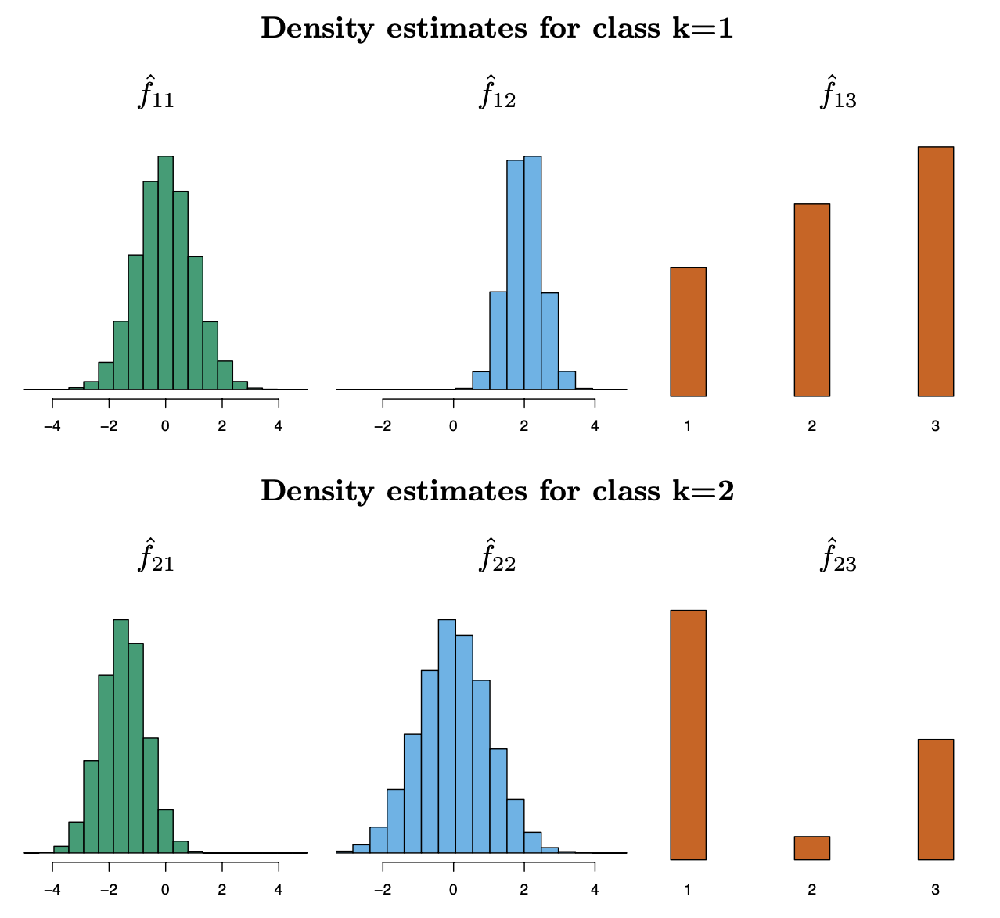\[ x^* = (0.4, 1.5, 1) \]
\[ \hat{\pi}_1 = \hat{\pi}_2 = 0.5 \]
\[ \hat{f}_{11}(0.4) = 0.368,\ \hat{f}_{12}(1.5) = 0.484,\ \hat{f}_{13}(1) = 0.226 \]
Density estimates for class \(k=2\)
\[ \hat{f}_{21}(0.4) = 0.030,\ \hat{f}_{22}(1.5) = 0.130,\ \hat{f}_{23}(1) = 0.616 \]
Probabilities:
\[ P(Y=1 \mid X = x^*) = 0.944 \]
\[ P(Y=2 \mid X = x^*) = 0.056 \]
Naïve Bayes and GAMs
\[ \log \left( \frac{\Pr(Y = k \mid X = x)}{\Pr(Y = K \mid X = x)} \right) = \log \left( \frac{\pi_k f_k(x)}{\pi_K f_K(x)} \right) \]
\[ = \log \left( \frac{\pi_k \prod_{j=1}^p f_{kj}(x_j)}{\pi_K \prod_{j=1}^p f_{Kj}(x_j)} \right) \]
\[ = \log \left( \frac{\pi_k}{\pi_K} \right) + \sum_{j=1}^p \log \left( \frac{f_{kj}(x_j)}{f_{Kj}(x_j)} \right) \]
\[ = a_k + \sum_{j=1}^p g_{kj}(x_j), \]
where \(a_k = \log \left( \frac{\pi_k}{\pi_K} \right)\) and \(g_{kj}(x_j) = \log \left( \frac{f_{kj}(x_j)}{f_{Kj}(x_j)} \right)\).
Hence, the Naïve Bayes model takes the form of a generalized additive model from Chapter 7.
Generalized Linear Models
- Linear regression is used for quantitative responses.
- Linear logistic regression is the counterpart for a binary response and models the logit of the probability as a linear model.
- Other response types exist, such as non-negative responses, skewed distributions, and more.
- Generalized linear models provide a unified framework for dealing with many different response types.
Example: Bikeshare Data
Linear regression with response bikers: number of hourly users in the bikeshare program in Washington, DC.
| Predictor | Coefficient | Std. error | z-statistic | p-value |
|---|---|---|---|---|
| Intercept | 73.60 | 5.13 | 14.34 | 0.00 |
| workingday | 1.27 | 1.78 | 0.71 | 0.48 |
| temp | 157.21 | 10.26 | 15.32 | 0.00 |
| weathersit[cloudy/misty] | -12.89 | 1.96 | -6.56 | 0.00 |
| weathersit[light rain/snow] | -66.49 | 2.97 | -22.43 | 0.00 |
| weathersit[heavy rain/snow] | -109.75 | 76.67 | -1.43 | 0.15 |

Mean/Variance Relationship

| Plot Description | Observation |
|---|---|
| Left Plot | Variance mostly increases with the mean. |
| Right Plot | Log transformation of bikers alleviates variance issues but introduces problems like wrong scale for predictions and zero counts. |
Additional Notes
- 10% of linear model predictions are negative! (not shown here).
- Log transformation (
log(bikers)) helps with variance issues but may introduce new complications.
Poisson Regression Model
- Poisson distribution is useful for modeling counts:
\[ Pr(Y = k) = \frac{e^{-\lambda} \lambda^k}{k!}, \, \text{for } k = 0, 1, 2, \ldots \]
- Mean/variance relationship:
\[ \lambda = \mathbb{E}(Y) = \text{Var}(Y) \]
i.e., there is a mean/variance dependence.
Model with Covariates
- We model:
\[ \log(\lambda(X_1, \ldots, X_p)) = \beta_0 + \beta_1 X_1 + \cdots + \beta_p X_p \]
- Or equivalently:
\[ \lambda(X_1, \ldots, X_p) = e^{\beta_0 + \beta_1 X_1 + \cdots + \beta_p X_p} \]
Key Features
Automatic positivity:
The model ensures that predictions are non-negative by construction.
Poisson Regression on Bikeshare Data
| Coefficient | Std. error | z-statistic | p-value | |
|---|---|---|---|---|
| Intercept | 4.12 | 0.01 | 683.96 | 0.00 |
| workingday | 0.01 | 0.00 | 7.50 | 0.00 |
| temp | 0.79 | 0.01 | 68.43 | 0.00 |
| weathersit[cloudy/misty] | -0.08 | 0.00 | -34.53 | 0.00 |
| weathersit[light rain/snow] | -0.58 | 0.00 | -141.91 | 0.00 |
| weathersit[heavy rain/snow] | -0.93 | 0.17 | -5.55 | 0.00 |
:::
By Hour
:::
Notes
- Overdispersion:
- In this case, the variance is somewhat larger than the mean — a situation known as overdispersion.
- As a result, the p-values may be misleadingly small.
Generalized Linear Models
- We have covered three GLMs in this course: Gaussian, binomial, and Poisson.
- They each have a characteristic link function. This is the transformation of the mean represented by a linear model:
\[ \eta(\mathbb{E}(Y|X_1, X_2, \ldots, X_p)) = \beta_0 + \beta_1 X_1 + \cdots + \beta_p X_p. \]
- The link functions for linear, logistic, and Poisson regression are:
- Linear: \(\eta(\mu) = \mu\),
- Logistic: \(\eta(\mu) = \log(\mu / (1 - \mu))\),
- Poisson: \(\eta(\mu) = \log(\mu)\).
Additional Notes
- Each GLM has a characteristic variance function.
- The models are fit by maximum likelihood, and model summaries are produced using
glm()in R. - Other GLMs include:
- Gamma
- Negative-binomial
- Inverse Gaussian
- and more.
Summary
Summary
- XXXX
- XXXX
Thank you!
Predictive Analytics